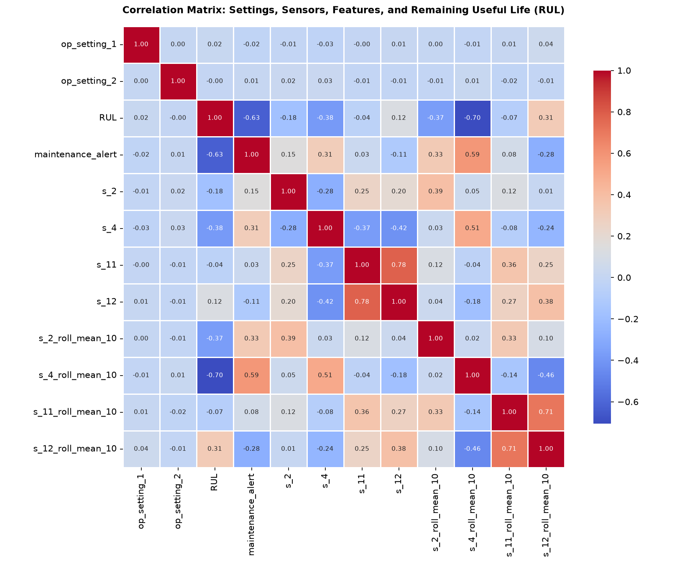
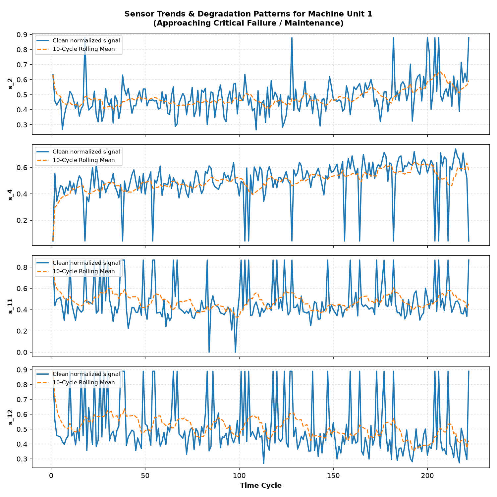

Total Units Monitored
15
Fleet C-MAPSS Engines
Average RUL Remaining
--
Cycles before failure
Critical Failure Risk
--
Alert Level 2 (RUL ≤ 30)
Warning State Units
--
Alert Level 1 (RUL 31–60)
Data Cleaning Integrity
100%
0 nulls, 0 dupes remaining
Engine Fleet Health Status
15 Active Units Loading engine telemetry...
Immediate Action Required
Critical RUL AlertSensor Degradation Curve vs Time Cycle
Raw Signal
5-Cycle Mean
10-Cycle Mean
s_2 & s_4 Temperature Signals
s_11 & s_12 Pressure & Speed Signals
Click any step above to inspect python logic & transformation outputs
Select a step in the pipeline map above to view its data engineering specifications, input/output schemas, and cleaning formulas.
Sensor Correlation Matrix (Heatmap)
Step 12 Output
Sensor Degradation Curve Plot
Unit 1 Analysis
Preprocessing Comparison Report (Raw vs Cleaned)
| Sensor | Raw Missing | Raw Missing % | Clean Missing | Raw Outliers (IQR) | Clean Outliers |
|---|
Showing 0 rows